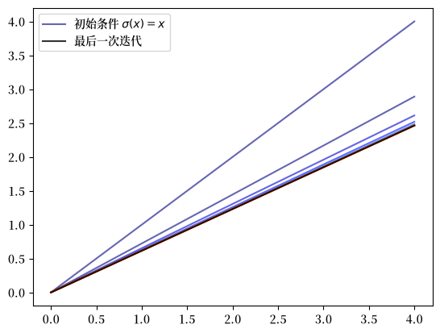
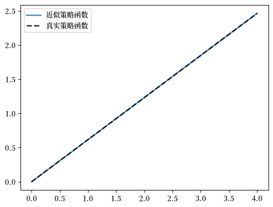
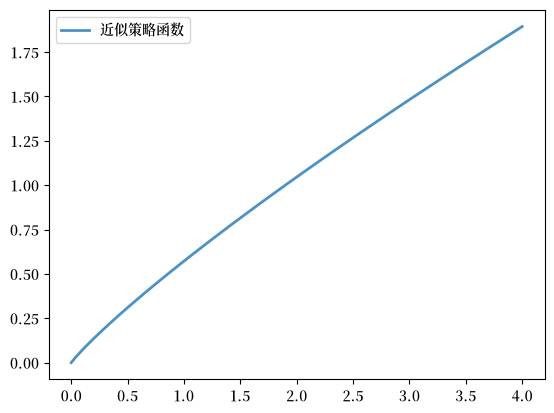

67. 最优储蓄 IV：时间迭代#
除了 Anaconda 中已有的内容之外，本讲座还需要以下库：
!pip install quantecon
67.1. 概述#
在本讲座中，我们将介绍时间迭代的核心思想：利用欧拉方程对最优策略的猜测进行迭代。
这种方法与我们在 最优储蓄 III：随机回报 中使用的价值函数迭代不同，在那里我们对价值函数本身进行迭代。
时间迭代利用欧拉方程的结构直接求出最优策略，而不是将计算价值函数作为一个中间步骤。
其关键优势在于计算效率：通过直接处理策略函数，我们通常能够比价值函数迭代更快地求解问题。
然而，时间迭代并不是现有基于欧拉方程的方法中最高效的。
在 最优储蓄 V：内生网格法 中，我们将介绍内生网格法（EGM），它提供了一种更加高效的方式来求解该问题。
目前，我们的目标是理解时间迭代的基本机制以及它如何利用欧拉方程。
让我们从一些导入开始：
import matplotlib.pyplot as plt
import numpy as np
from scipy.optimize import brentq
from typing import NamedTuple, Callable
import matplotlib as mpl # i18n
FONTPATH = "fonts/SourceHanSerifSC-SemiBold.otf" # i18n
mpl.font_manager.fontManager.addfont(FONTPATH) # i18n
mpl.rcParams['font.family'] = ['Source Han Serif SC'] # i18n
67.2. 欧拉方程#
我们的第一步是推导欧拉方程，它是我们在 吃蛋糕问题 I：最优储蓄导论 中得到的欧拉方程的推广。
我们采用 最优储蓄 III：随机回报 中给出的模型，并添加以下假设：
\(u\) 和 \(f\) 是连续可微且严格凹的
\(f(0) = 0\)
\(\lim_{c \to 0} u'(c) = \infty\) 且 \(\lim_{c \to \infty} u'(c) = 0\)
\(\lim_{k \to 0} f'(k) = \infty\) 且 \(\lim_{k \to \infty} f'(k) = 0\)
最后两个条件通常称为 稻田条件（Inada conditions）。
回顾贝尔曼方程
设 \(v^*\) 为价值函数，设 \(\sigma^*\) 为最优消费策略。
我们知道 \(\sigma^*\) 是一个 \(v^*\)-贪婪策略。
上述条件意味着
\(\sigma^*\) 是最优储蓄问题的唯一最优策略
最优策略是连续的、严格递增的，并且是内部的，即对所有严格为正的 \(x\)，都有 \(0 < \sigma^*(x) < x\)，并且
价值函数是严格凹的且连续可微的，满足
由于其与包络定理的关系，最后这个结果被称为包络条件。
为了理解 (67.2) 为何成立，将贝尔曼方程写成等价形式
对 \(x\) 求导，然后在最优处求值即可得到 (67.2)。
（EDTC 的第 12.1 节包含了这些结果的完整证明，许多其他文献中也可以找到密切相关的讨论。）
价值函数的可微性和最优策略的内部性意味着最优消费满足与 (67.1) 相关的一阶条件，即
将 (67.2) 与一阶条件 (67.3) 结合起来，得到欧拉方程
我们可以把欧拉方程看作一个函数方程
它定义在内部消费策略 \(\sigma\) 上，其中一个解就是最优策略 \(\sigma^*\)。
我们的目标是求解函数方程 (67.5)，从而得到 \(\sigma^*\)。
67.2.1. Coleman-Reffett 算子#
回顾贝尔曼算子
正如我们引入贝尔曼算子来求解贝尔曼方程一样，我们现在将引入一个作用于策略之上的算子，以帮助我们求解欧拉方程。
这个算子 \(K\) 将作用于所有连续、严格递增且内部的 \(\sigma \in \Sigma\) 构成的集合。
此后我们用 \(\mathscr P\) 表示这个策略集合。
算子 \(K\) 以一个 \(\sigma \in \mathscr P\) 作为其参数，并且
返回一个新函数 \(K\sigma\)，其中 \(K\sigma(x)\) 是求解下式的 \(c \in (0, x)\)
为了纪念 [Coleman, 1990] 和 [Reffett, 1996] 的工作，我们称这个算子为 Coleman-Reffett 算子。
本质上，\(K\sigma\) 是当你未来的消费策略为 \(\sigma\) 时，欧拉方程告诉你今天应该选择的消费策略。
关于 \(K\) 的重要一点是，根据其构造，它的不动点与函数方程 (67.5) 的解相一致。
特别地，最优策略 \(\sigma^*\) 是一个不动点。
事实上，对于固定的 \(x\)，值 \(K\sigma^*(x)\) 就是求解下式的 \(c\)
根据欧拉方程，这恰好是 \(\sigma^*(x)\)。
67.2.2. Coleman-Reffett 算子是良定义的吗？#
具体来说，是否总是存在唯一的 \(c \in (0, x)\) 求解 (67.7)？
在我们的假设下，答案是肯定的。
对于任何 \(\sigma \in \mathscr P\)，(67.7) 的右侧
在 \((0, x)\) 上关于 \(c\) 连续且严格递增
当 \(c \uparrow x\) 时发散到 \(+\infty\)
(67.7) 的左侧
在 \((0, x)\) 上关于 \(c\) 连续且严格递减
当 \(c \downarrow 0\) 时发散到 \(+\infty\)
绘制这些曲线并利用上述信息，你会相信当 \(c\) 在 \((0, x)\) 范围内变化时，它们恰好相交一次。
再进行一些分析，还可以证明：只要 \(\sigma \in \mathscr P\)，就有 \(K \sigma \in \mathscr P\)。
67.2.3. 与 VFI 的比较（理论）#
可以证明，\(K\) 的迭代与贝尔曼算子的迭代之间存在着紧密的关系。
从数学上讲，\(T\) 和 \(K\) 在一个变换下是拓扑共轭的，该变换在一个方向上涉及微分，在另一个方向上涉及积分。
这种共轭性意味着，如果一个算子的迭代收敛，那么另一个算子的迭代也收敛，反之亦然。
此外，从某种意义上说，它们至少在理论上以相同的速率收敛。
然而，事实证明，算子 \(K\) 在数值上更加稳定，因此在我们考虑的应用中更加高效。
这是因为
\(K\) 利用了额外的结构，因为它使用了一阶条件，并且
接近最优策略的策略曲率较小，因此比接近最优价值函数的价值函数更容易近似。
下面给出示例。
67.3. 实现#
让我们转向实现。
备注
在本讲座中，我们主要关注算法，在代码中优先考虑清晰性而非效率。
在后续讲座中，我们将同时优化算法和代码。
与 最优储蓄 III：随机回报 中一样，我们假设
\(u(c) = \ln c\)
\(f(x-c) = (x-c)^{\alpha}\)
当 \(\zeta\) 为标准正态时，\(\phi\) 是 \(\xi := \exp(\mu + \nu \zeta)\) 的分布
这使我们能够将结果与我们在那个讲座中得到的解析解进行比较：
def v_star(x, α, β, μ):
"""
真实价值函数
"""
c1 = np.log(1 - α * β) / (1 - β)
c2 = (μ + α * np.log(α * β)) / (1 - α)
c3 = 1 / (1 - β)
c4 = 1 / (1 - α * β)
return c1 + c2 * (c3 - c4) + c4 * np.log(x)
def σ_star(x, α, β):
"""
真实最优策略
"""
return (1 - α * β) * x
如上所述，我们的计划是使用时间迭代来求解模型，这意味着用算子 \(K\) 进行迭代。
为此，我们需要访问函数 \(u'\) 以及 \(f, f'\)。
我们使用来自 最优储蓄 III：随机回报 的相同 Model 结构。
class Model(NamedTuple):
u: Callable # 效用函数
f: Callable # 生产函数
β: float # 贴现因子
μ: float # 冲击位置参数
ν: float # 冲击尺度参数
grid: np.ndarray # 状态网格
shocks: np.ndarray # 冲击抽样
α: float = 0.4 # 生产函数参数
u_prime: Callable = None # 效用的导数
f_prime: Callable = None # 生产的导数
def create_model(
u: Callable,
f: Callable,
β: float = 0.96,
μ: float = 0.0,
ν: float = 0.1,
grid_max: float = 4.0,
grid_size: int = 120,
shock_size: int = 250,
seed: int = 1234,
α: float = 0.4,
u_prime: Callable = None,
f_prime: Callable = None
) -> Model:
"""
创建最优储蓄模型的一个实例。
"""
# 设置网格
grid = np.linspace(1e-4, grid_max, grid_size)
# 存储冲击（使用种子，以便结果可复现）
np.random.seed(seed)
shocks = np.exp(μ + ν * np.random.randn(shock_size))
return Model(u, f, β, μ, ν, grid, shocks, α, u_prime, f_prime)
现在我们实现一个名为 euler_diff 的方法，它返回
def euler_diff(c: float, σ: np.ndarray, x: float, model: Model) -> float:
"""
设置一个函数，使得给定 x 和 σ 时，
关于 c 的根等于 Kσ(x)。
"""
# 解包
u, f, β, μ, ν, grid, shocks, α, u_prime, f_prime = model
# 通过插值将 σ 转化为一个函数
σ_func = lambda x: np.interp(x, grid, σ)
# 现在设置我们需要求根的函数。
vals = u_prime(σ_func(f(x - c, α) * shocks)) * f_prime(x - c, α) * shocks
return u_prime(c) - β * np.mean(vals)
函数 euler_diff 通过蒙特卡洛计算积分，并使用线性插值来近似函数。
我们将使用求根算法，在给定状态 \(x\) 和当前策略猜测 \(σ\) 的情况下求解 (67.8) 中的 \(c\)。
这是算子 \(K\)，它实现了求根步骤。
def K(σ: np.ndarray, model: Model) -> np.ndarray:
"""
Coleman-Reffett 算子
"""
# 解包
u, f, β, μ, ν, grid, shocks, α, u_prime, f_prime = model
σ_new = np.empty_like(σ)
for i, x in enumerate(grid):
# 求解 x 处的最优 c
c_star = brentq(euler_diff, 1e-10, x-1e-10, args=(σ, x, model))
σ_new[i] = c_star
return σ_new
67.3.1. 测试#
让我们生成一个实例，并从 \(σ(x) = x\) 开始绘制 \(K\) 的一些迭代结果。
# 定义带导数的效用函数和生产函数
α = 0.4
u = lambda c: np.log(c)
u_prime = lambda c: 1 / c
f = lambda k, α: k**α
f_prime = lambda k, α: α * k**(α - 1)
model = create_model(u=u, f=f, α=α, u_prime=u_prime, f_prime=f_prime)
grid = model.grid
n = 15
σ = grid.copy() # 设置初始条件
fig, ax = plt.subplots()
lb = r'初始条件 $\sigma(x) = x$'
ax.plot(grid, σ, color=plt.cm.jet(0), alpha=0.6, label=lb)
for i in range(n):
σ = K(σ, model)
ax.plot(grid, σ, color=plt.cm.jet(i / n), alpha=0.6)
# 再更新一次，并用黑色绘制最后一次迭代
σ = K(σ, model)
ax.plot(grid, σ, color='k', alpha=0.8, label='最后一次迭代')
ax.legend()
plt.show()
findfont: Failed to find font weight normal, now using 600.
findfont: Failed to find font weight normal, now using 600.

我们看到迭代过程快速收敛到一个极限，该极限与我们在 最优储蓄 III：随机回报 中得到的解相似。
这里有一个名为 solve_model_time_iter 的函数，它接受一个 Model 实例，并使用时间迭代返回最优策略的近似值。
def solve_model_time_iter(
model: Model,
σ_init: np.ndarray,
tol: float = 1e-5,
max_iter: int = 1000,
verbose: bool = True
) -> np.ndarray:
"""
使用时间迭代求解模型。
"""
σ = σ_init
error = tol + 1
i = 0
while error > tol and i < max_iter:
σ_new = K(σ, model)
error = np.max(np.abs(σ_new - σ))
σ = σ_new
i += 1
if verbose:
print(f"Iteration {i}, error = {error}")
if i == max_iter:
print("Warning: maximum iterations reached")
return σ
让我们调用它：
# 解包
grid = model.grid
σ_init = np.copy(grid)
σ = solve_model_time_iter(model, σ_init)
Iteration 1, error = 1.1098265895953756
Iteration 2, error = 0.27827989207957415
Iteration 3, error = 0.09312729948559406
Iteration 4, error = 0.034020038271351805
Iteration 5, error = 0.012820752818722525
Iteration 6, error = 0.004888081560539437
Iteration 7, error = 0.0018718902256100733
Iteration 8, error = 0.0007180512309572507
Iteration 9, error = 0.0002756205293255043
Iteration 10, error = 0.00010582190181418483
Iteration 11, error = 4.063319516900421e-05
Iteration 12, error = 1.5602790842006442e-05
Iteration 13, error = 5.991419175455093e-06
这是所得策略与真实策略的对比图：
# 解包
grid, α, β = model.grid, model.α, model.β
fig, ax = plt.subplots()
ax.plot(grid, σ, lw=2,
alpha=0.8, label='近似策略函数')
ax.plot(grid, σ_star(grid, α, β), 'k--',
lw=2, alpha=0.8, label='真实策略函数')
ax.legend()
plt.show()

同样，拟合效果非常好。
两个策略之间的最大绝对偏差为
# 解包
grid, α, β = model.grid, model.α, model.β
np.max(np.abs(σ - σ_star(grid, α, β)))
np.float64(3.7348959489591493e-06)
正如在 最优储蓄 III：随机回报 中所讨论的，时间迭代的运行速度比价值函数迭代更快。
这是因为时间迭代利用了可微性和一阶条件，而价值函数迭代没有使用这一可用的结构。
同时，还有一种运行速度更快的时间迭代变体。
那就是内生网格法，我们将在 最优储蓄 V：内生网格法 中介绍它。
67.4. 练习#
练习 67.1
使用 CRRA 效用求解最优储蓄问题
设 γ = 1.5。
计算并绘制最优策略。
解答 练习 67.1
我们定义 CRRA 效用函数及其导数。
γ = 1.5
def u_crra(c):
return c**(1 - γ) / (1 - γ)
def u_prime_crra(c):
return c**(-γ)
# 使用与之前相同的生产函数
model_crra = create_model(u=u_crra, f=f, α=α,
u_prime=u_prime_crra, f_prime=f_prime)
现在我们求解并绘制策略：
%%time
# 解包
grid = model_crra.grid
σ_init = np.copy(grid)
σ = solve_model_time_iter(model_crra, σ_init)
fig, ax = plt.subplots()
ax.plot(grid, σ, lw=2,
alpha=0.8, label='近似策略函数')
ax.legend()
plt.show()
Iteration 1, error = 1.449952719114732
Iteration 2, error = 0.3967698022828947
Iteration 3, error = 0.14845269076775747
Iteration 4, error = 0.06192954031818343
Iteration 5, error = 0.02701766560136787
Iteration 6, error = 0.012019070058329806
Iteration 7, error = 0.005393694573905705
Iteration 8, error = 0.002429984649992001
Iteration 9, error = 0.0010967197524931471
Iteration 10, error = 0.0004953902833375601
Iteration 11, error = 0.0002238472234141753
Iteration 12, error = 0.0001011641350074921
Iteration 13, error = 4.572272482672446e-05
Iteration 14, error = 2.066580711579391e-05
Iteration 15, error = 9.340704450133686e-06
CPU times: user 529 ms, sys: 23.8 ms, total: 553 ms
Wall time: 523 ms
